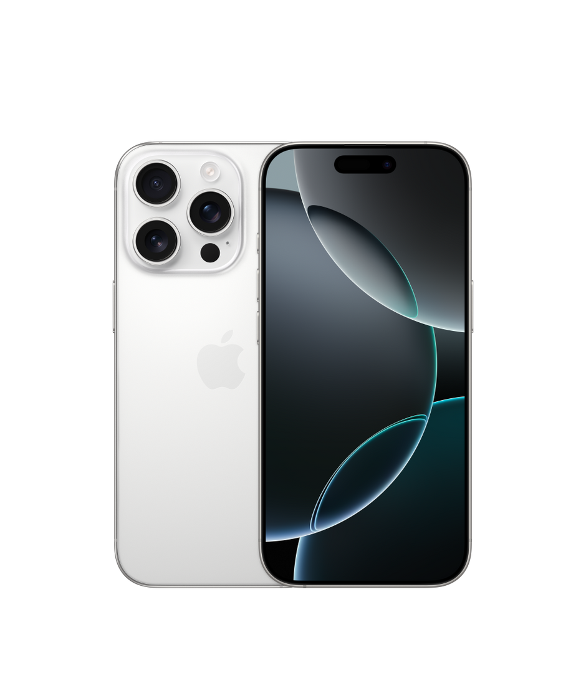
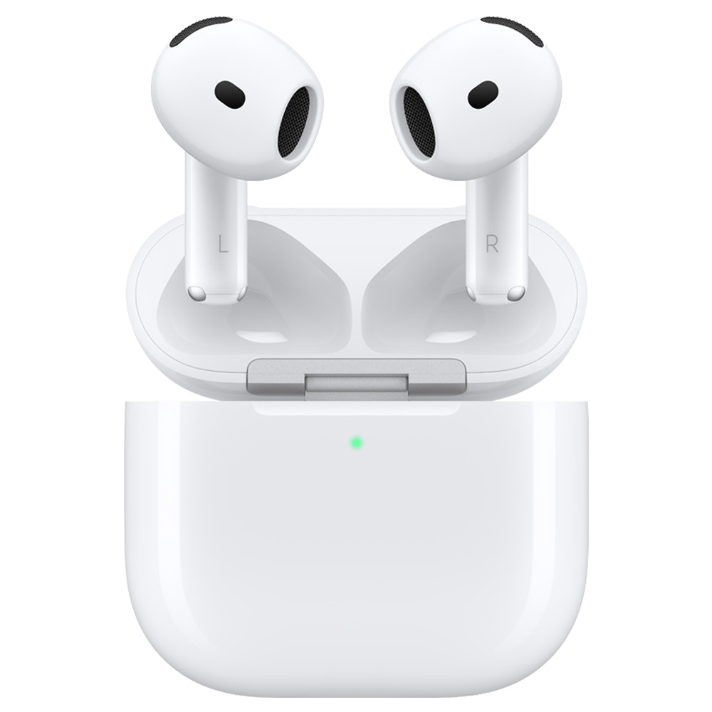

Store
Mac
iPad
iPhone
Watch
AirPods
TV & Casa
Intrattenimento
Accessori
Supporto
MacBook Air
Colore celeste
E prestazioni celestiali,con M4
Scopri di più
Acquista
iPhone 16
Progettato per Apple Intelligence.

Scopri di più
Acquista
AirPods 4
Con cancellazione attiva del rumore.

Scopri di più
Acquista